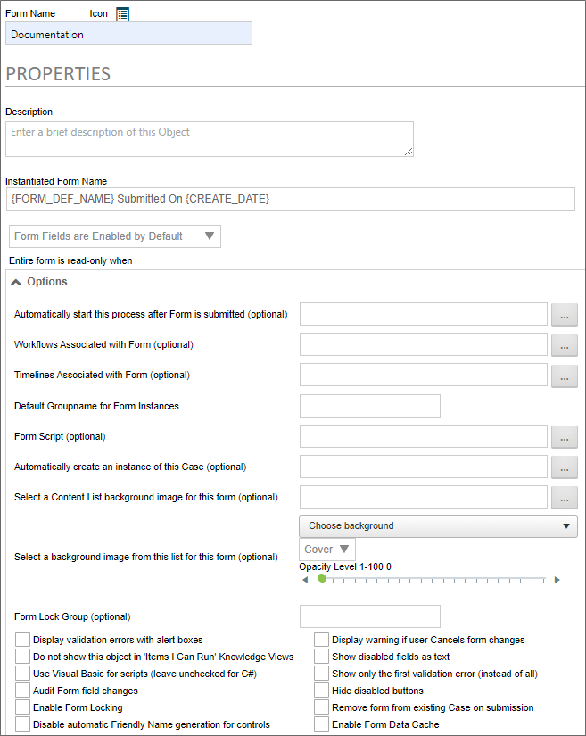
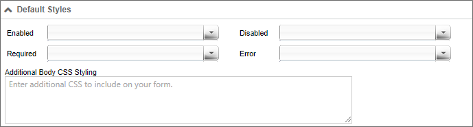

Properties Tab

The Properties tab enables you to change the default behavior of the form. We'll discuss all of the existing properties, but keep in mind that some properties are only visible to installations that have the appropriate licensing. If your license doesn't cover a property, such as the auditing or scripting properties, you won't see them in the product UI.
The options on this tab include the ability to change default styles and how to handle validation errors. Associating processes with Forms allows the Form to reference steps and other information in that process. The Default Styles control the stylized borders and colors around Form controls, depending on the controls’ status (enabled, required, disabled, or error).
Instantiated Form Name
The Instantiated Form Name property determines the name that will be given to each Form instance. One should usually use System Variables here, so that the Form’s instance’s name is relevant to the specific instance. As a best practice, every form should be given an Instantiated Form Name that is unique to that instance, for easier searching in Knowledge Views.
Form Fields Enabled/Disabled
Any time you create a Process Director Form, you should think carefully about when controls should be enabled or disabled, or when they should be shown or hidden. Most of the time, most controls will need to be disabled after the initial user fills out the form. Or, perhaps the form might contain controls that only managers can see, and which should be hidden from other users. In general, you should ask yourself some questions about visibility and enabling scenarios:
- What fields should be edited by the initial user?
- What fields should be edited at later stages of the process?
- What fields should be shown or hidden based on the user?
- What fields should be shown or hidden based on the process?
You have the option to determine the default setting for whether form fields are enabled or disabled, using this dropdown control. The control offers four settings:
- Form Fields are enabled by default: All form fields are enabled by default.
- Form Fields are disabled by default: All form fields are disabled by default.
- Form Fields are enabled only when...: All form fields are enabled only when a user-defined condition applies. Selecting this option enables you to define a condition or set of conditions that, when true, enable the form fields.
- Form Fields are disabled only when...: All form fields are disabled only when a user-defined condition applies. Selecting this option enables you to define a condition or set of conditions that, when true, disable the form fields.
These form level-settings can be overridden in the properties for individual controls. For example, if you select "Form Fields are disabled by default", but set an individual control to be enabled, the control setting will override the Form option setting you choose here. The general rule to remember when setting an enabling option is that the setting at the lowest level always wins.
One of the settings in the dropdown is Form Fields are enabled Only when, and this setting enables you to set a condition. BP Logix recommends that you use this option and set this condition to New Form Instance = Yes. This setting enables the Form to be editable prior to its initial submission, but not editable afterward. You can then protect the information originally submitted, while enabling the specific fields that you want approvers or reviewers to edit during the process.
Entire form is read-only when
Form definitions can be configured as "read-only". Selecting this option enables you to define a condition or set of conditions that, when true, will cause the form will act as though the user doesn't have modify permission on the form (whether or not that would otherwise be the case). An open form in "read-only" state won't trigger form locking. Unlike the option to enable form fields, this option overrides any "enabled" settings at the control level. The data contained in a read-only form can't be edited, irrespective of the enabled/disabled settings that might be set elsewhere.
Options Section #
This section of the tab contains the general properties of the form. This section enables you to specify the Process Timeline to invoke when the form is submitted, and to associate different objects to the form to make configuring conditions based on those objects easier. Additionally, this section contains properties that enable you to configure the overall operation of the form, and specify general form behaviors.
Automatically start this process after Form is submitted
The primary method for starting a process in Process Director is to call the process from a Form when the Form is submitted. This option defines the process that will be started, and the Object Picker control allows you to choose a Process Timeline. Once you've selected the process you desire, then every time a new instance of the Form is submitted, the selected process will start, and the Form and its data will be attached to that process.
BP Logix recommends that you use a Process Timeline as the process to start after the form is submitted.
In most cases, you'll also want to set the Timelines Associated With Form property to the same process you set here, so that any Form conditions you create that evaluate process data will use this process by default. Setting the association will make configuring Timeline-based conditions much easier and quicker.
Workflows Associated with Form (optional) / Timelines Associated with Form (optional)
In many cases, you'll need to create conditions that evaluate process data to control the operation of a form. For example, you might wish to show a section of the form only when a specific Timeline Activity is running. To do so, you need to create a Form condition that returns true or false, based on whether the specified Activity is currently running. When you associate a process via this property, that process will become the default process to use when configuring process-based conditions. If you don't set this property, then you'll have to specify the process every time you configure a condition that evaluates the process. Setting this property, therefore, makes configuring process-based conditions much simpler, and quicker.
Setting the Automatically start this process... property doesn't create this association. In most cases, you should set both this property and the Automatically start this process... property to the same Process Timeline.
Default Groupname for Form Instances
You can set a custom Group Name for each instance of the Form. This enables you to group Forms by department, process type, etc. When a process is started that automatically adds a Form, it will use the Default Groupname... property configured on the Form definition.
Form Script (optional)
You may associate a custom script with a Form to perform specialized, programmatic functions. This feature requires the SDK license.
Automatically create an instance of this case (optional)
For Case Management applications, this option enables you to select the Case Definition for which a new instance will be created when the Form is submitted. When a Case definition is selected, the Form won't only create the Case instance, but will also set some or all of the Case properties from controls on the Form.
Select a Content List background image for this form (optional)
This option enables you to select an image you've uploaded to the Content List, and will use that image as a background image for the Form.
Select a background image from this list for this form (optional)
This option enables you to select an image from a dropdown control that contains a number of stock background images, and will use that image as a background image for the Form.

Below the image dropdown, an additional Background Image Sizing dropdown enables you to specify how the background image will appear on the form. The following options are available:
- Cover: The image will expand to fill the entire page background.
- Center: The image will appear in its actual size, centered on the page vertically and horizontally.
- Tile: The image will appear in its actual size, aligned to the top left of the window, and will tile vertically and horizontally.
- Tile X: The image will appear in its actual size, aligned to the top left of the window, and will tile along the X-axis only.
- Tile X: The image will appear in its actual size, aligned to the top left of the window, and will tile along the Y-axis only.
Finally, an Opacity Level property enables you to set the opacity percentage by changing a slider value from 0 to 100.

This slider will set the opacity of the form, not the background image. The form background displays above the page background that contains the image, so, the higher the opacity level, the more opaque the form background becomes, and the more the background image is obscured. In the example below, the opacity level is set to 50, i.e., 50% opaque.

Form Lock Group (Optional)
This is an advanced locking feature. Entering a value in this box will create a form lock group for the form, so that multiple locks can exist at once on a form instance. This feature is an expansion of the existing Form Locking functionality. Rather than locking the form any time a user is viewing it, the Lock Group allows the administrator to add additional conditions that will lock the form only when those conditions are met. This enables concurrent tasks or users assigned in parallel to a task to access the form simultaneously without locking it. This does have the inherent risk of one user saving over another user’s changes if multiple people have it open and don’t meet the conditions of the Form Lock Group, similar to the existing risks when locking isn't being used.
So, let's look at an example. Let's say that we set the optional Form Lock Group to {TASK_USER,FORMAT=userid}. In that case, the form will be locked only when a user in the same task accesses the form. Users who are in other tasks would still be able to edit the form, because the lock group wouldn't apply to them.
Display validation errors with alert boxes
The default method of displaying validation errors on a Form is to display a text message at the top and bottom of the Form, which will appear as a yellow error banner. Selecting this option also causes the validation error to appear in an alert dialog box.
Do not show this object in 'Items I Can Run' Knowledge Views
Selecting this option removes the Form from the Items I can Run Global Knowledge View.
Use Visual Basic for scripts (leave unchecked for C#)
The default programming language for scripts in Process Director is the C# programming language. Selecting this option enables the use of Visual Basic.NET as a scripting language for this Form.
Audit Form field changes
Users of Cloud Installations, on-premise installation with the Subscription license, or on-premise installations with the Compliance Option, have the ability to maintain a record of every change made to Form fields during the process. Selecting this option enables field-level auditing for the Form. This auditing information can be reviewed in the properties of the Form Instance, by viewing the Audit Viewer tab. Fully-detailed auditing information can also be accessed in the Audit logs, or, if configured for use, the IT Admin area's Audit Logs page.
Enable Form Locking
Form locking prevents other users from making changes to a Form instance once a user opens it. This prevents multiple users from overwriting each other's changes. Selecting this option enables form locking.
Disable automatic Friendly Name generation for controls
For Process Director v6.0 and higher, this property enables you to turn off the default behavior that automatically generates Friendly Names for Form controls. When selected, all Friendly Names will have to be supplied manually for each control.
Display warning if user Cancels form changes
Selecting this option will display a warning before closing the Form when users cancel their changes.
Show disabled fields as text
Selecting this option will display only the text in disabled fields, rather than displaying the actual control. The value in the control will be output to the Form as simple text, as if the control did not exist.
 BP Logix recommends that you use this setting.
BP Logix recommends that you use this setting.
Show only the first validation error (instead of all)
In a Form contains multiple validation errors (i.e., field values that don't meet the criteria for acceptable data), only the first validation error will be shown when the validation fails if this option is checked.
Hide disabled buttons
Selecting this option will keep disabled buttons from appearing on the Form when it is displayed.
Remove form from existing Case on submission
This option tells Process Director to remove a new form instance from an existing case instance during submission if it is already in a case instance.
When a new Form instance is created from inside an existing case, the default behavior is to add the new Form to that case. Checking this option changes the default behavior so that the new form Instance is automatically transferred to a new case instance. Any case properties from the existing case instance that have been applied to form fields will remain applied. This enables the new form to be displayed with the case properties from the existing case instance, but when the form instance is submitted, it will only set properties in a new case instance that is created on submission, without altering the properties of the existing case instance.
Enable Form Data Cache
This option implements form data caching for the form. For an explanation of what Form Data Caching is, and how it works, please see the Form Data Caching topic.
URL Customization
For users of Process Director v5.13 and higher, this section enables you to customize the Form URL to use to access the form. This section assists you with constructing the URL to use for users who access the form via URL only. It doesn't change the operation of the form when accessed through the Process Director UI. You can then copy the Form URL and paste it into a hyperlink from an HTML document, such as an intranet portal page, outside of Process Director. This section of the form only changes the Form URL that is displayed. It has no other effect of the form's operation. The sole purpose of this section is to edit the URL so that you can copy and paste it for use outside of Process Director. Changing the options in this section will, when the Form definition is updated, update the Form URL displayed at the bottom of the tab.

The properties available in this section correspond to some of the commonly used Form Definition URL parameters documented in the Forms topic, and which are included in the default Form URL displayed at the bottom of the tab.
- Do Not Show Home Page: Controls whether the home page should be opened when the link is clicked.
- Skip Complete Page: Controls whether the complete page should be displayed when the form is submitted.
- Complete Page URL: Specifies the URL of the page that should serve as the complete page when the form is submitted.
- Complete Page Text: Specifies a text message that should be displayed when the form is submitted, rather than redirecting to a complete page.
Default Styles Section #

This section enables you to quickly change the default styling of various fields on the Form, based on the status of the field. For each field status, you can choose a default style from the dropdown, or type in any desired CSS styles manually. You can alter the styling for the following field status types:
- Enabled
- Disabled
- Required
- Error
Additionally, the Additional Form Body CSS Styling property will accept CSS Stylesheet Class syntax that you can apply to any element on the Form. You would simply enter the CSS styling in the same way you'd in a CSS stylesheet, e.g.:
body
{
color: #FF0000;
font-family: Arial, Geneva, Helvetica, sans-serif;
}
For Process Director v5.31 and higher, a custom variable, EnableFormFieldDownload, will display a link at the bottom of this tab labeled Download Field List, to enable users to download an Excel Spreadsheet containing the list of fields. This feature is primarily relevant to the use of the separately-licensed Mobile Application Component.
More Configuration Tabs
You can view the documentation for each of the other configuration tabs by using the Table of Contents displayed on the upper right corner of the page, or use one of the links below.
Edit: Opens the editor for the form's visual template, the Online Form Designer.
Form Controls: Enables you to set individual properties for each field on the form.
Custom Task Event Mapping: Enables you to map Custom Tasks to run on specified form events.
Validation Rules: Enables you to add custom validation to the form.
Set Form Data: Enables you to set the value of Form fields automatically, based on events or conditions you specify.
Fill Dropdowns: Enables you to automatically set the options available in a dropdown control.
Other Tabs: Documentation for the Form Data SQL View, History, Meta Data, Versions, and Permissions tabs.